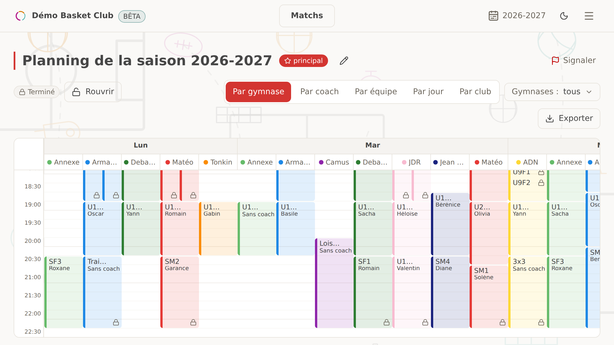
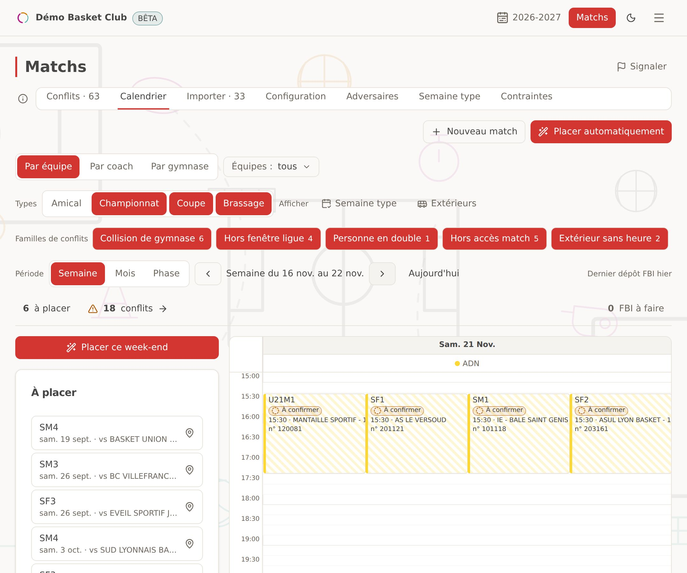
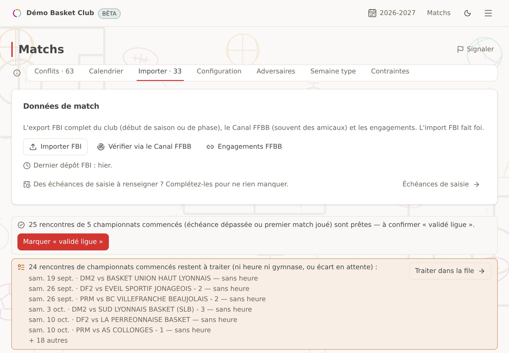
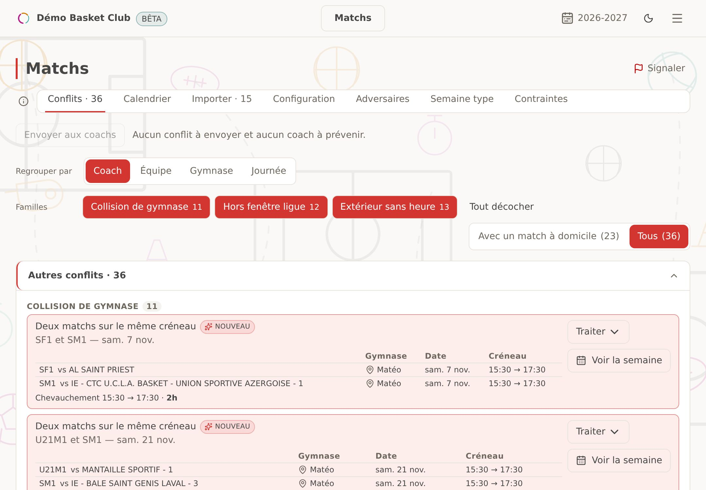

Vous décrivez une fois vos équipes, vos gymnases, vos coachs et vos contraintes : le planning
de la saison sort seul, et vous gardez la main pour l'affiner. Six étapes guidées, rien n'est
perdu si vous vous arrêtez en route. Une combinaison impossible est expliquée, jamais contournée
en douce. Sur la grille, une séance se déplace, se verrouille, se mutualise entre équipes ; le
planning s'exporte en PDF ou en Excel, pour tous les gymnases ou un seul.

Les imprévus
Un gymnase ferme : vous posez la fermeture depuis l'accueil et seule cette période change, le
reste de la saison reste intact. Les séances qui ne passent plus sont nommées « à replacer », et
les écarts avec le planning de saison sont résumés équipe par équipe.
Les vacances
Le calendrier scolaire et les jours fériés arrivent tout seuls. Chaque période de vacances a
son planning, avec une reprise progressive si vous le souhaitez. Vous recevez un rappel par
e-mail 30, 14 et 7 jours avant chaque période de vacances scolaires, et 14, 7 et 3 jours avant
une période que vous avez posée vous-même, tant que son planning n'est pas prêt.
Les contraintes, faciles à gérer
Une règle se pose une fois — par club, par équipe, par coach ou par gymnase — et Amateo ne
l'oublie jamais. Certaines vont de soi sans que vous les écriviez : le coach principal est
présent à ses séances, un repos suit un jour de match. Les vœux et les indisponibilités des
coachs arrivent par un lien personnel, sans compte ; c'est toujours vous qui tranchez.
Les matchs
L'aide au placement
Vous déposez l'export FBI de votre club : Amateo range les matchs par équipe et pose vos
matchs à domicile sur les créneaux où vos gymnases sont libres. Un nouveau dépôt du même fichier
ne remplace rien en silence : chaque écart (date, heure, salle) vous est montré. Le résultat
s'ajuste et se verrouille à la main.

La détection des erreurs FBI
Un écart entre votre planning et ce que dit la fédération ne passe plus inaperçu. L'écran
« FBI — à faire » liste ce qu'il reste à saisir ou à corriger dans FBI, avec l'échéance de
chaque compétition ; il alerte, sans jamais bloquer.

Les conflits de coachs vus en amont
Un coach sur deux rencontres, un match et un entraînement au même moment, un gymnase pris
deux fois : Amateo le repère tout seul, dès le dépôt du fichier. Chaque conflit se traite —
dérogation demandée, réglé en interne, sans solution pour l'instant — et ne se masque jamais.
D'un seul geste, chaque coach reçoit par e-mail les conflits qui le concernent.

Les déplacements extérieurs
Un match à l'extérieur mobilise votre coach et votre équipe plus longtemps qu'un
entraînement : Amateo compte le trajet routier réel jusqu'au gymnase adverse. L'annuaire des
adversaires se localise tout seul depuis le fichier FBI.
On ne repart pas de zéro
Vous vous inscrivez avec le code de votre club : son nom, son adresse, sa couleur et son logo
arrivent, et les équipes engagées cette saison sont créées automatiquement. Si vous avez déjà un
planning, sur tableur, en PDF ou en photo, l'IA le transforme en équipes, gymnases et créneaux :
vous relisez l'aperçu avant d'importer. Les coachs et les contraintes se saisissent ensuite,
guidés pas à pas.
Ce qu'Amateo ne fait pas
Il n'écrit rien dans FBI.FBI reste l'outil de la fédération ; Amateo lit votre export et vous dit quoi y saisir.
Il ne gère ni paiements, ni licences, ni cotisations.Il vit à côté de votre outil de gestion, pas à sa place.
Il ne fabrique pas le calendrier des championnats.Les rencontres viennent du comité ou de la ligue ; Amateo les range et les place.
Il ne remplace pas votre jugement.Amateo dégrossit le travail, à vous les finitions.
Il n'envoie ni convocations ni messages aux joueurs ou aux familles.Vous transmettez le planning aux coachs en PDF ou en Excel ; ils déposent leurs indisponibilités par un lien personnel, sans compte.
Il est fait pour le basket amateur affilié FFBB, et pour lui seul aujourd'hui.Pas d'autre sport, pas d'autre fédération.